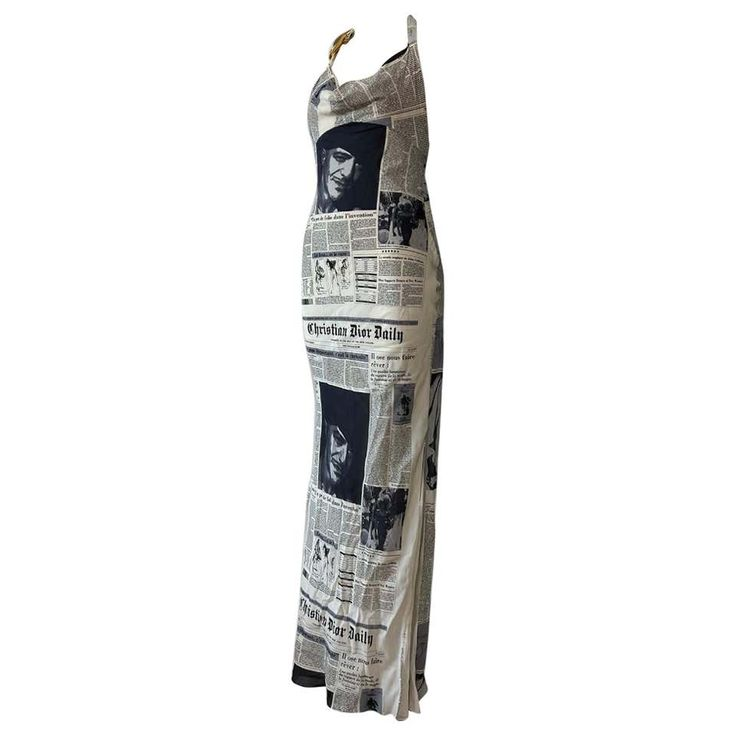
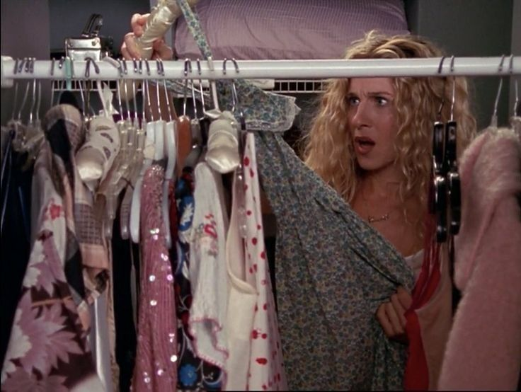
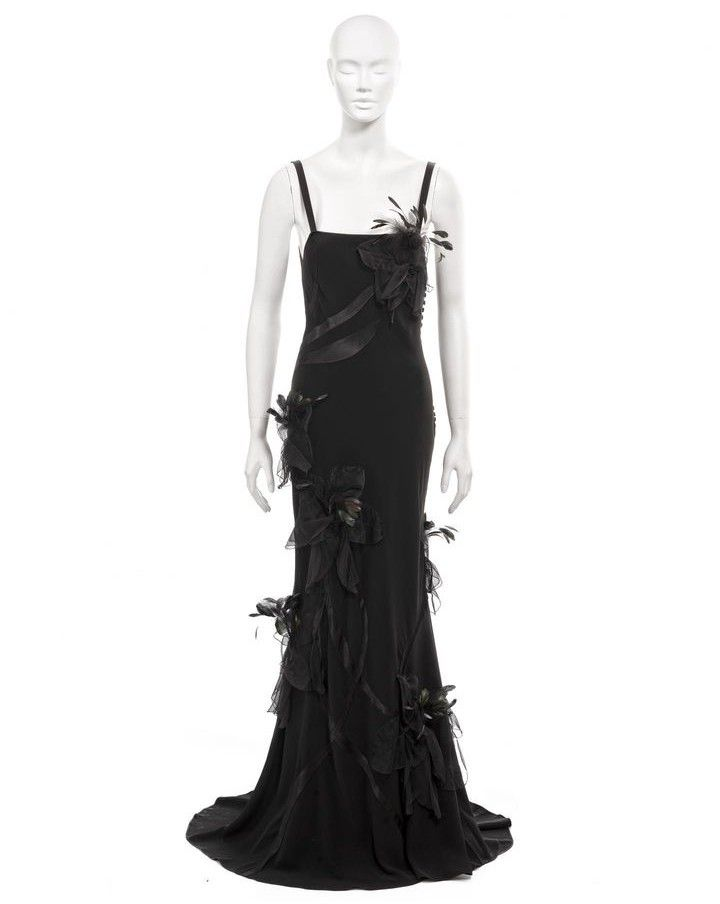
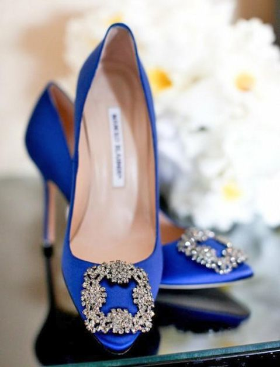
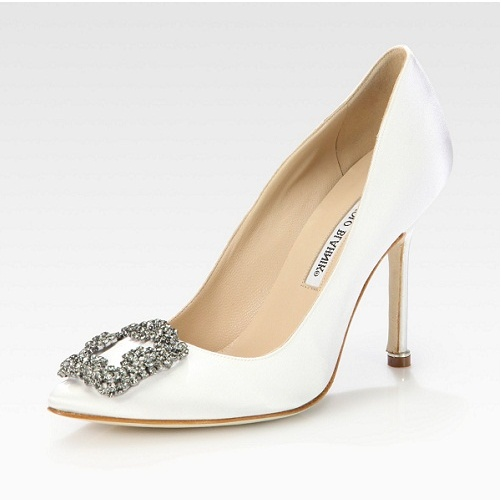
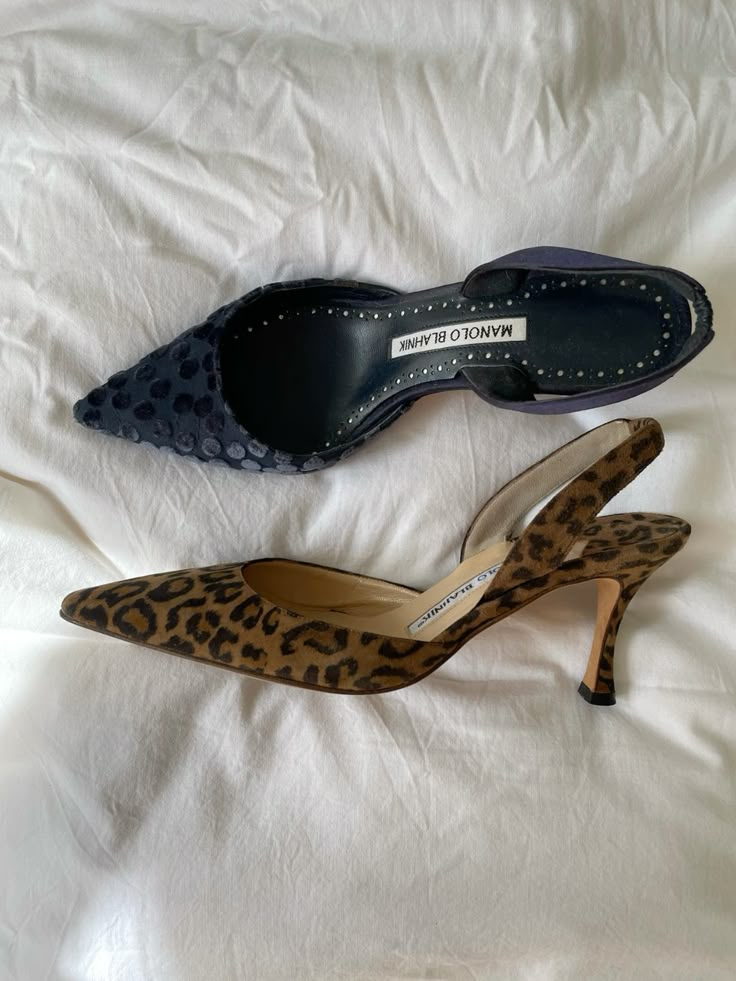
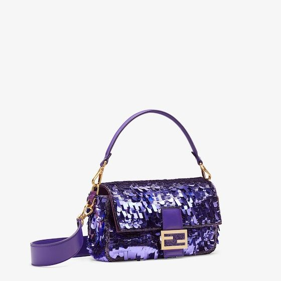
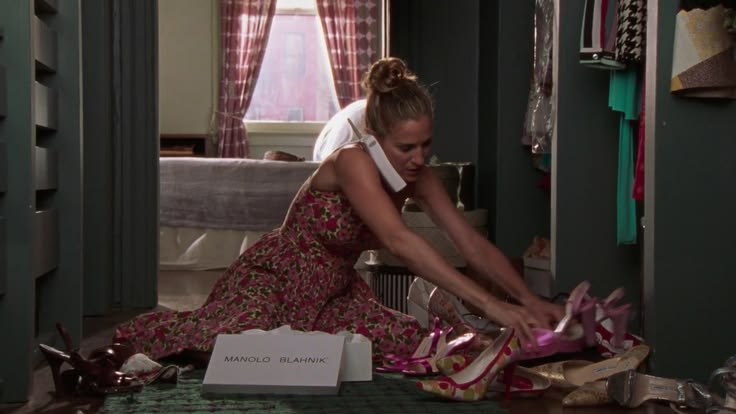
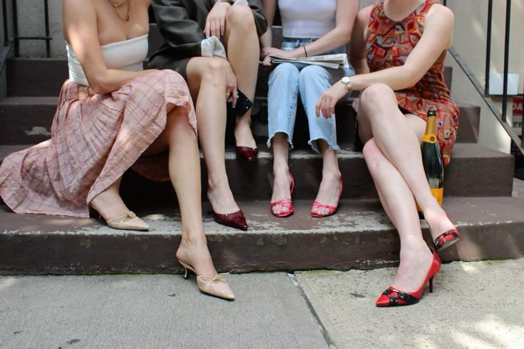

{kind=link}

El vestido periódico
Notas de estilo +
El estampado de periódico de Dior, creado por John Galliano, es uno de los códigos más reconocibles del vestuario de Carrie. Esta pieza de archivo muestra el diseño sin una escena de fondo.

INICIO / CARRIE’S CLOSET
EL ARCHIVO DE ESTILO · NUEVA YORKUn poco de tul, un par inolvidable
y una forma muy propia de vestirse.

Tul, flores y lentejuelas. Prendas de archivo y combinaciones de inspiración, con espacio para mirar cada detalle.
VOLVER AL VESTIDOR ↑
El estampado de periódico de Dior, creado por John Galliano, es uno de los códigos más reconocibles del vestuario de Carrie. Esta pieza de archivo muestra el diseño sin una escena de fondo.

Una musculosa blanca y una falda rosa: inspiración para ese equilibrio entre prendas sencillas y una textura que se lleva todas las miradas.

Vestido largo con flores y detalles de plumas sobre maniquí. Una referencia de inspiración para el costado más teatral del vestidor.
Su debilidad más famosa. Una pequeña colección de modelos icónicos y referencias de inspiración.
VOLVER AL VESTIDOR ↑
Manolo Blahnik. El modelo de satén azul con hebilla de cristales se vuelve un símbolo romántico en la primera película de Sex and the City.

Una variante del modelo Hangisi. Referencia de diseño; este color no se presenta como el par azul de la película.

Manolo Blahnik en una referencia vintage. Una inspiración para el gusto de Carrie por los zapatos con personalidad; no atribuimos estos pares a un episodio concreto.

Recorte de inspiración en rosa: tiras delicadas y pequeños lazos para acompañar el ambiente femenino del vestidor.
Bolsos al hombro, brillo y color. El detalle que termina de contar un look.
VOLVER AL VESTIDOR ↑
Su silueta compacta y su versión de lentejuelas violetas están ligadas al estilo de Carrie. La imagen es una referencia del modelo, no un fotograma.

Un bolso de asa de cadena en rosa pálido con monograma clásico, lazo frontal y silueta redondeada que suma ese aire romántico y sofisticado de la era de Carrie.
Las pruebas, las amigas y ese momento de encontrar el par perfecto.


Archivo visual e inspiración: fotos aportadas para la página y referencias de Pinterest. Historias de estilo: Vogue · zapatos y Vogue · estilo de Carrie.

Amor, amistad, moda y
Noches inolvidables en Nueva York

{kind=link}
{kind=link}
{kind=link}
{kind=link}
{kind=link}